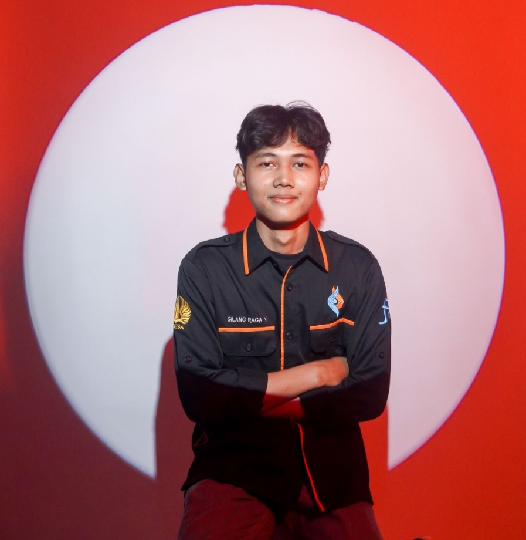
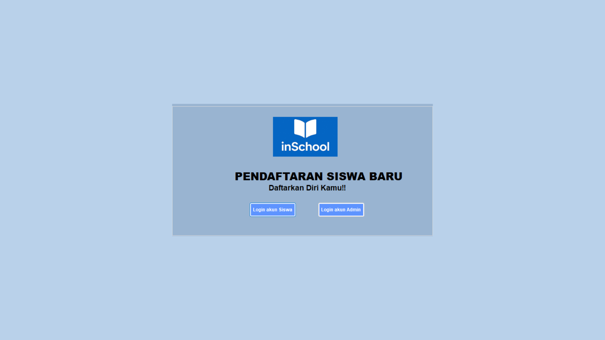
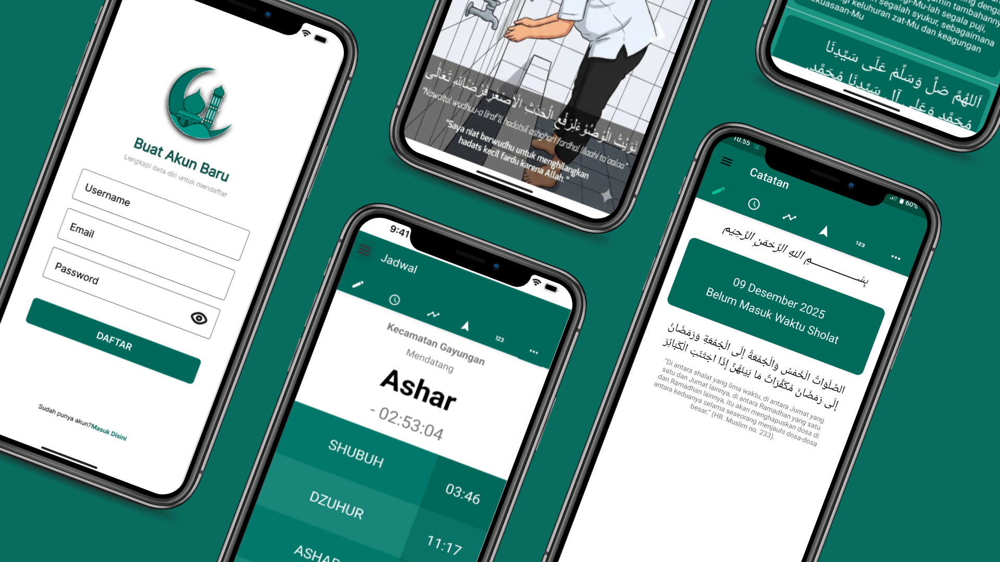
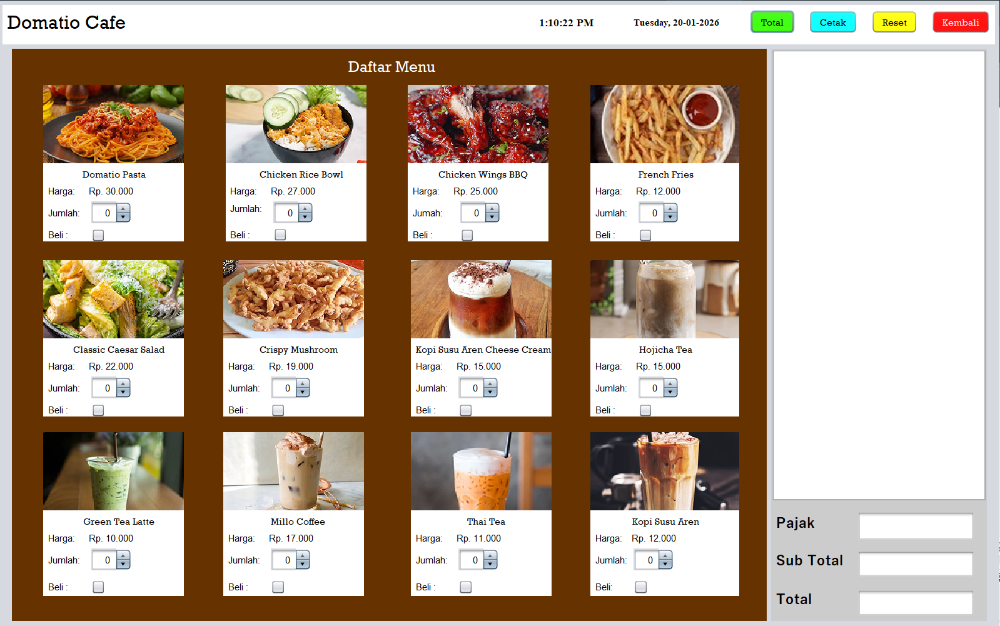

Semester 4 | S1 Pendidikan Teknologi Informasi
Mahasiswa aktif semester 4 yang passionate dalam dunia teknologi dan pendidikan. Memiliki ketertarikan khusus pada pengembangan web, desain multimedia, dan penerapan teknologi dalam pembelajaran. Selalu antusias untuk belajar hal baru dan mengembangkan keterampilan di bidang IT.

Project Showcase
Sertifikat
Skill Teknis
Penghargaan
Beberapa project terbaik yang telah saya buat

Aplikasi "InSchool" adalah aplikasi desktop berbasis Windows Forms (VB.NET) untuk manajemen PPDB SMA/MA. Aplikasi ini memfasilitasi pendaftaran siswa secara daring dengan dua jalur pilihan yaitu Prestasi dan Domisili. Dilengkapi dengan sistem manajemen data terpusat, admin dapat mengelola informasi pendaftar secara efisien menggunakan fitur CRUD dan fungsi pencarian data yang akurat guna memastikan validitas data siswa baru

Pengembangan aplikasi “Jago Sholat” dengan bahasa pemrograman java dan kotlin. Pada versi update ini, terdapat penambahan beberapa fitur yang dapat membantu pengguna dalamberibadah secara konsisten, seperti notifikasi suara adzan ketika memasuki jam sholat, fitur kompas yang bisa digunakan untuk menentukan arah kiblat, fitur tasbih digital yang dapat digunakan ketika pengguna tidak membawa tasbih saat beribadah, menu sidebar yang terdapat halaman akun pengguna dan halaman tentang aplikasi.

Aplikasi GUI berbasis desktop berjudul “Domatio Cafe” ini dikembangkan menggunakan bahasa pemrograman Java dengan menerapkan konsep Object-Oriented Programming (OOP). Aplikasi ini dirancang untuk memudahkan pelanggan dalam memesan makanan secara daring tanpa harus mengantre atau memanggil pelayan
Kemampuan teknis yang saya kuasai